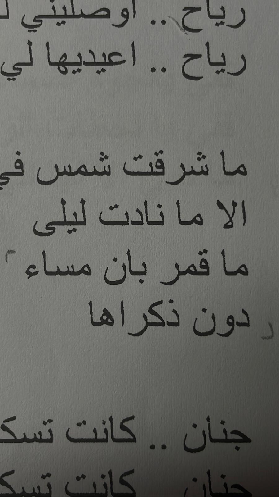
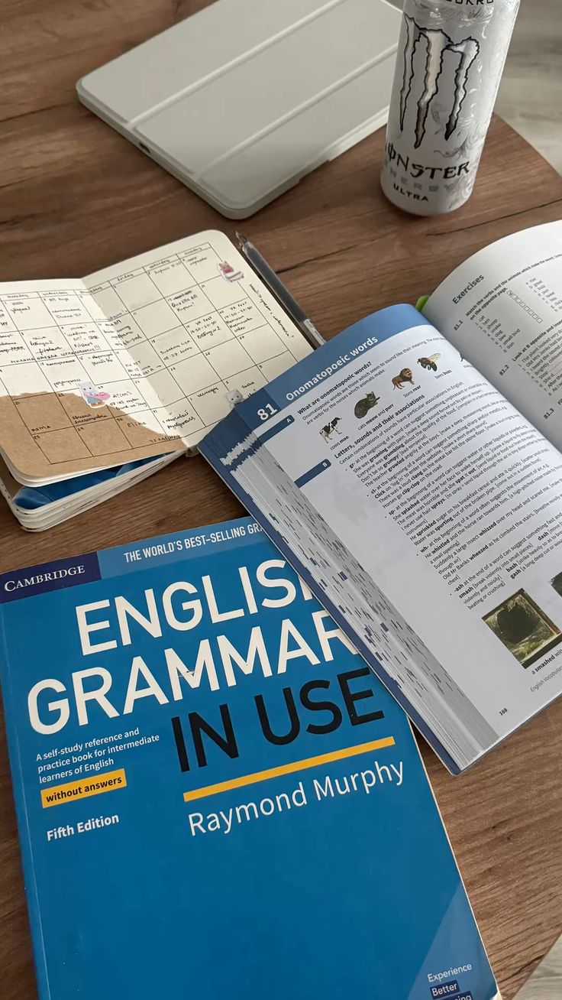
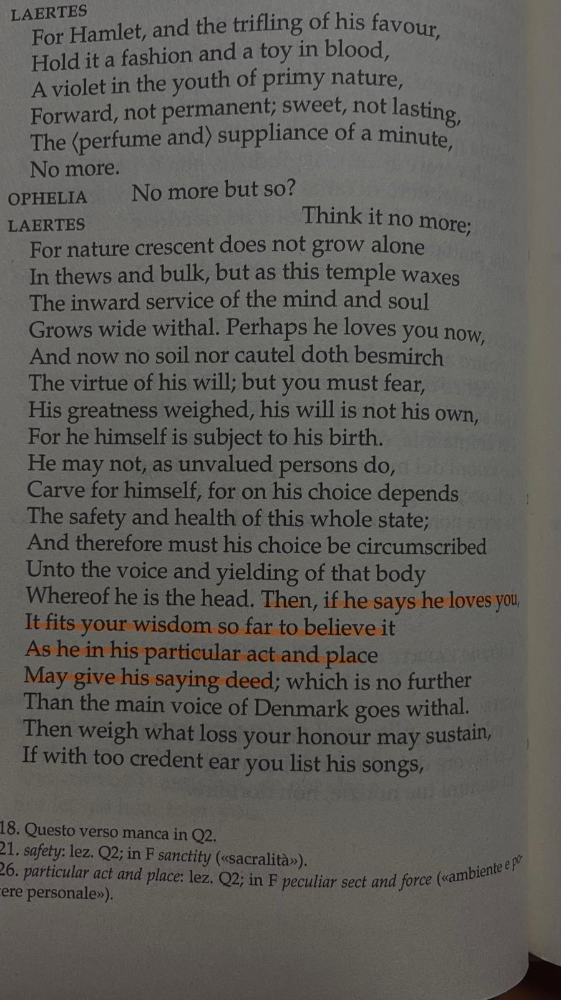

Hi! let me introduce myself, I'm Caterina Gallina (my friends call me Categ) I was born in a small town in the province of Agrigento, but I've been living in Palemro for 5 years now. I've always had a great passion for languages, especially English and for this reason, I decide to enroll in the Languages and Literatures- Intercultural Studies program.



Over the years, thanks also to my engineer frinds, I developed a strong interest in computer scienze, which is why I decided to enroll in the Digital humanities , program here at the University of Palermo.
I've always been a curios person, and during my university years, I've had the chance to expirement with several hobbies. However, the one that truly captured my interest and passion is social media. And don't get me wrong! I'm not addicted to social media—I just really enjoy creating short content where I share my university life, joke around with my friends, or show what I'm eating (click here to see my TikTok page). It is precisely through these short videos that I've managed to gain great proficiency with many editing apps, like CapCut or DaVinci I've been able to improve my techniques and constantly apply new ones until it all became second nature to me Thanks to editing, and consequently to social media, I've been able to meet many people and have the chance to connect with professionals who have been in the industry for a long time. But the surprises don't end here!
Follow me on social media to stay updated!